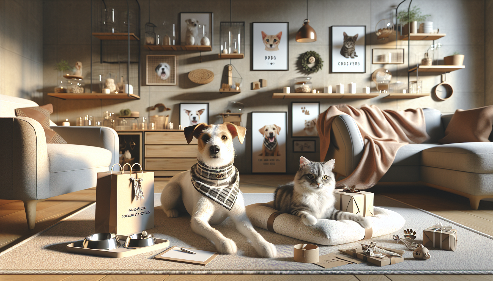

If there is one thing pet owners never get tired of, it is finding adorable, useful, and meaningful products for their furry family members. This year, Etsy continues to be one of the best places to discover unique pet items that feel more personal than what you might find in big-box stores. From customized keepsakes to stylish everyday essentials, the marketplace is full of creative finds that celebrate the bond between people and their pets.
Whether you are shopping for your own dog, looking for a thoughtful gift for a fellow pet lover, or simply curious about what is popular right now, keeping up with trending pet products on Etsy this year can help you find something special. Handmade details, personalization, and small-shop charm are leading the way, especially for dog lovers who want products that are both practical and full of personality.
In this guide, we are diving into the biggest trends pet owners are loving right now, why these items are so popular, and how to choose products that fit your pet’s lifestyle. If you love discovering standout Etsy finds, you are in the right place.
One of the biggest trends on Etsy this year is personalization. Pet owners want items that feel custom-made for their beloved companions, and Etsy sellers are delivering in a big way. Personalized pet products stand out because they add a unique touch while also making daily essentials feel extra special.
Some of the most popular personalized pet accessories include custom bandanas, engraved collars, pet ID tags, monogrammed blankets, and feeding mats with a pet’s name. These products are especially appealing because they combine style and function. A personalized collar or tag can help with identification, while a custom bandana makes any dog look photo-ready for walks, holidays, and special occasions.
Gift shoppers are also drawn to personalized pet items because they feel thoughtful and memorable. Instead of giving a generic pet toy or treat jar, a customized accessory shows extra care and attention. That is exactly why these products continue to trend year after year.
Another standout trend this year is custom pet art. Pet portraits have become one of Etsy’s most beloved categories, and it is easy to see why. Pet owners love celebrating their animals with artwork that captures their personality, and gift givers love how sentimental these pieces feel.
Custom portraits now come in many different styles, from modern minimalist line drawings to colorful digital illustrations and regal renaissance-inspired prints. Many shoppers are also looking for memorial keepsakes that honor a beloved pet in a beautiful and comforting way. This emotional connection makes custom pet art especially popular for birthdays, holidays, anniversaries, and sympathy gifts.
In addition to wall art, keepsake products like personalized ornaments, paw print displays, and framed pet name signs are trending strongly. These items help pet owners bring their love for their animals into their home decor in a way that feels stylish and heartfelt.
For gift shoppers, custom pet keepsakes are a great choice because they feel one-of-a-kind. They are ideal for dog moms, cat dads, and anyone who treats their pet like family.
Pet owners today want more than plain, purely functional products. This year, Etsy trends show a clear move toward stylish everyday pet essentials that blend beautifully into home life. Handmade bowls, chic leash holders, neutral-toned toy bins, and aesthetically pleasing pet beds are all gaining attention.
Instead of hiding pet gear away, many shoppers now want products that complement their home decor. Soft earth tones, minimalist designs, and natural materials like wood, cotton, and ceramic are especially popular. This trend reflects a broader lifestyle shift: pet products are becoming part of the home’s overall look and feel.
Dog lovers in particular are searching for accessories that are durable enough for everyday use but still attractive enough to display. A handcrafted leash rack by the door or a personalized dog bowl set in a modern kitchen can make pet ownership feel even more integrated into daily life.
This category is also a smart place to shop for practical gifts. Stylish essentials are useful, thoughtful, and easy to appreciate, especially for new pet parents or recently adopted rescue dogs.
If your social feeds have been filled with dogs in adorable holiday outfits, you are not imagining it. Seasonal pet products are still a huge Etsy trend this year. Pet owners love dressing up their dogs for holidays, birthdays, adoption anniversaries, and family photo moments, and Etsy offers plenty of charming ways to join the fun.
Popular seasonal products include festive dog bandanas, birthday hats, holiday stockings for pets, Easter accessories, pumpkin-themed fall gear, and Christmas ornaments personalized with a pet’s name. These products are especially shareable on social media, which helps drive their popularity even more.
Many shoppers enjoy buying a few seasonal items throughout the year to mark special moments with their pets. These purchases are often small but meaningful, making them ideal for impulse buys and gift baskets. For Etsy sellers, this trend also works well because it encourages repeat purchases as each new season approaches.
For dog lovers, seasonal accessories offer a fun way to include pets in family traditions. A personalized birthday bandana or holiday-themed accessory can turn an everyday moment into a memory worth capturing.
More shoppers are paying attention to how products are made, and that includes pet items too. On Etsy, eco-friendly and handmade pet products are seeing strong interest this year. Buyers appreciate the craftsmanship, quality, and sustainability that often come with shopping from small makers.
Products made with organic fabrics, recycled materials, natural dyes, and low-waste packaging are especially appealing. Reusable pet wipes, handmade rope toys, washable bowl mats, and sustainably sourced wooden accessories are all part of this growing movement.
Pet owners often feel good knowing they are supporting independent creators while also choosing products that may be gentler on the environment. Handmade items also tend to feel more special than mass-produced options, which adds to their value as gifts.
This trend is not just about aesthetics. It is about intention. Shoppers want products that reflect their values, and Etsy remains one of the best places to find pet goods made with care.
One of the most exciting Etsy trends this year is the rise of products made for pet lovers, not just pets. While customized collars and bowls remain popular, there is also growing demand for gifts that celebrate the people who adore their animals.
Think personalized mugs with dog illustrations, tote bags featuring breed designs, sweatshirts with pet names, memorial jewelry, and home decor that proudly shows off pet parent status. These gifts are perfect for birthdays, Mother’s Day, Father’s Day, Christmas, or just because.
Gift shoppers especially love this category because it opens up more possibilities. If the recipient already has all the basics for their dog, a pet-themed gift for them can feel fresh and exciting. It also reflects how deeply pets are woven into everyday identity and family life.
For dog lovers, these products are more than novelty items. They are a joyful way to express affection for a pet that means the world to them.
With so many beautiful options available, it helps to shop with a few priorities in mind. First, think about the pet’s personality and routine. A stylish bandana is great for a social dog who goes on outings, while a custom blanket may be perfect for a pet who loves cozy naps.
Next, consider quality and materials. Read product descriptions carefully, check sizing details, and review customer photos when possible. Etsy is full of handmade treasures, but choosing the right item means paying attention to craftsmanship and practicality.
If you are buying a gift, personalization can make a huge difference. Adding a pet’s name, choosing a favorite color, or selecting a design that matches the owner’s style can turn a lovely item into a truly unforgettable one.
Finally, do not forget timing. Personalized products often require extra production time, especially during holidays. Shopping early helps ensure you get exactly what you want without the stress of last-minute shipping delays.
From personalized accessories and custom portraits to eco-friendly essentials and gifts for devoted pet parents, the trending pet products on Etsy this year reflect what modern shoppers care about most: individuality, quality, and heart. Pet owners are no longer looking only for basic supplies. They want products that tell a story, celebrate their animals, and add a little extra joy to everyday life.
That is what makes Etsy such a standout destination for pet lovers and gift shoppers. It offers creative, meaningful products from small businesses that understand just how special pets are. Whether you are updating your dog’s everyday accessories, planning ahead for holiday gifting, or searching for something personalized and memorable, there has never been a better time to explore what is trending.
If you are ready to find something unique for your furry friend or a fellow pet lover, shop personalized pet products at SnoutAndAbout on Etsy.